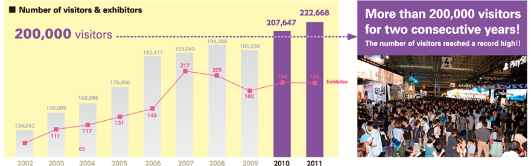

TOP PAGE EXHIBITOR INFO Overview
TOKYO GAME SHOW 2012 EXHIBITOR INFO［Overview］
Console×Smart phone×PC×SNS×Asia Tokyo Game Show is always in the focal point for new trends!
- ■This is no-charged business matching system that facilitates business talk between Business Day visitors and participant companies during TGS. Via PCs or smartphones, business partners can be searched, an appointment can be made, the setting of business talk can be communicated, and a no-charged meeting space can be reserved.
- ■The channel for the distribution of official videos is set up so that fans around the world who cannot make it to visit the TGS 2012 can share the joy of TGS as much as possible. Keynotes and scenes inside the venue can be actually viewed.
- ■It is planned that pre-events tied up with Asian media partners will be hosted so that people in Asian regions can get familiar with TGS. Through cosplays or game competitions, the joy of TGS can be experienced.
- ■This is the exhibition area that introduces Asian promising venture companies, tool
development companies, etc to Japanese game companies. The outline of participant companies, etc. will be elucidated by local media partners.
Tokyo Game Show 2012 will boost its functions further for the achievement of the medium-term vision "Asia's No.1 Game Show" In 2011, 193 companies both inside and outside Japan joined TGS 2011, whose venue was filled with 1,250 booths. On the opening day of the Business Day, Asia Game Business Summit, an event organized by five major game companies in Asia, as well as three keynote forums, was hosted. This event grabbed the headlines around the world, not to mention the attention of visitors. Also, the deployment of the business matching system and meeting spaces as measures to enhance business functions won a high mark from the participant companies and visitors.
Main initiatives of Business Days boosted in the 2011 TGS
- 【Expansion of Business Functions】
- The Business Matching System was offered for free, the system that allowed the participant companies at home and abroad and Business Day visitors to register in the system and to make an appointment for business talk. In 2011, 323 companies (including 122 overseas companies) registered in the system, and the number of appointments made reached 3261.
Eventually, 235 business meetings were actually realized, and the almost half, 117 business meetings, were between Japanese companies and overseas countries.
- 【Collaboration with media】
- For the boost of tie-up with the media, the Media Partner system was fortified. In 2011, with new tie-up with Hong Kong’ Game Weekly and PC Market, the Media Partners were extended to include five nations and regions: Japan, South Korea, Taiwan, China and Hong Kong.
- 【Globalization】
- Asia Game Business Summit was held, whereby the management of five major game companies in Japan, South Korea, Taiwan, and China were invited. This conference grabbed the headlines around the world.
During Public Day, an event featuring Asian stellar cosplayers “Cosplay Collection Night @ TGS presented by Cure,” and other partner events in the previous year were hosted. Inside the venue, exhibition events were offered to communicate information to a wider range of user populations, such as organizer’s exhibition featuring new-model smartphones “Smartphone Special Area,” and a PC online gaming event "Gaming PC World". In addition, popular events were also offered in TGS 2011, including a game planning competition "Sense of Wonder Night (SOWN) 2011," and stage shows. As a result, the number of visitors reached 222,668 in total, a record high. TGS saw more than 200,000 visitors in total for two consecutive years.
